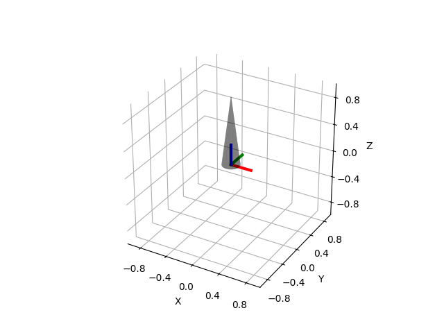

Note
Click here to download the full example code
Plot Mesh¶
This example shows how to load an STL mesh. This example must be run from within the main folder because it uses a hard-coded path to the STL file.
print(__doc__)
import os
import numpy as np
import matplotlib.pyplot as plt
from pytransform3d.transformations import plot_transform
from pytransform3d.plot_utils import plot_mesh
BASE_DIR = "test/test_data/"
data_dir = BASE_DIR
search_path = "."
while (not os.path.exists(data_dir) and
os.path.dirname(search_path) != "pytransform3d"):
search_path = os.path.join(search_path, "..")
data_dir = os.path.join(search_path, BASE_DIR)
ax = plot_mesh(
filename=os.path.join(data_dir, "cone.stl"),
s=5 * np.ones(3), alpha=0.3)
plot_transform(ax=ax, A2B=np.eye(4), s=0.3, lw=3)
plt.show()
Total running time of the script: ( 0 minutes 2.651 seconds)